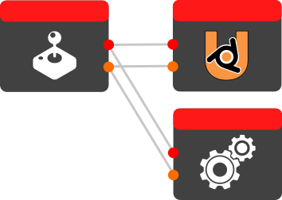

Uchronian Logic 
0.3.5.1
Installation
Examples
Nodes
Condition Nodes
Parameter Nodes
Active Camera (Node)
Animation Status (Node)
Armature Bone Status (Node)
Boolean (Node)
Has Property (Node)
Current Scene (Node)
Dict: Get Key (Node)
Euler (Node)
Euler To Matrix (Node)
Get Child By Name (Node)
Float (Node)
Formatted String (Node)
Formula (Node)
Gamepad Sticks (Node)
Gamepad Trigger (Node)
Get Actuator (Node)
Get Actuator By Name (Node)
Get Object Data (Node)
Get Owner (Node)
Get Parent (Node)
Get Property (Node)
Get Sensor Value (Node)
Has Property (Node)
Integer (Node)
Invert Boolean (Node)
Invert Boolean (Node)
Limit Range (Node)
Inputs:
Outputs:
List: Get Index (Node)
Math (Node)
MatrixToEuler (Node)
Mouse Data (Node)
Orientation (Node)
Random Float (Node)
Random Integer (Node)
Screen Position (Node)
Sensor Positive (Node)
Separate XY (Node)
Separate XYZ (Node)
String (Node)
Threshold (Node)
Time Data (Node)
True / False (Node)
Vector 2 (Node)
Vector 3 (Node)
World Position (Node)
Action Nodes
Node Components
Uchronian Logic
»
Nodes
»
Parameter Nodes
»
Limit Range (Node)
View page source
Limit Range (Node)
¶
Description
Inputs:
¶
inputs
Outputs:
¶
outputs